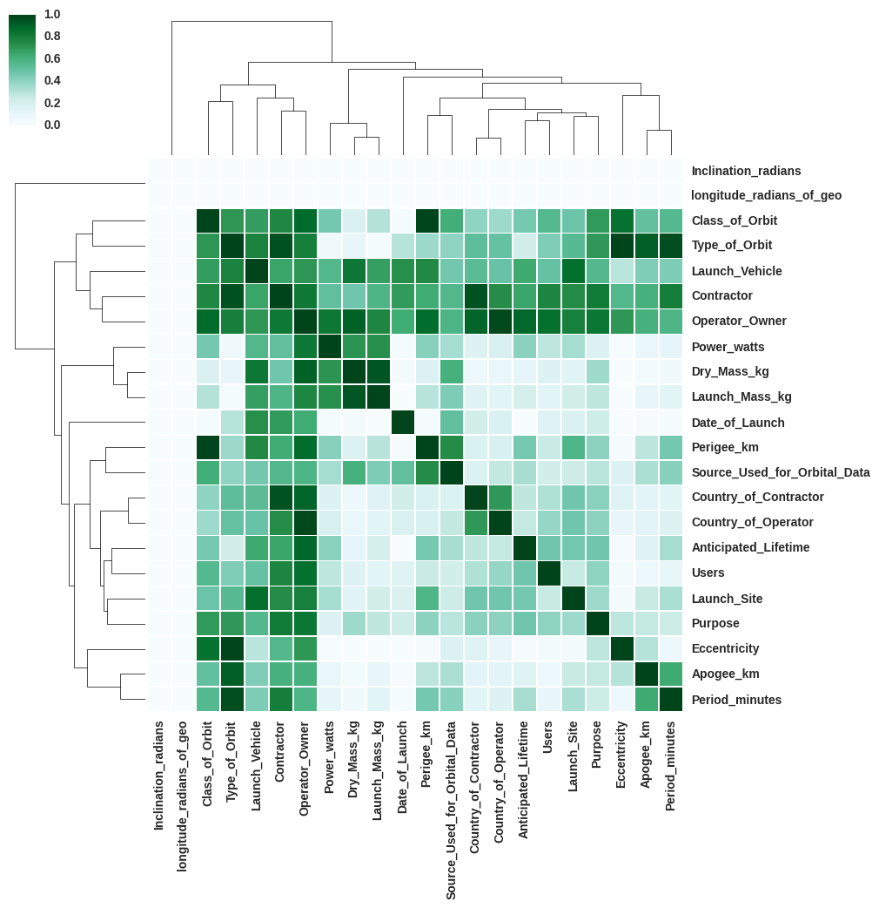
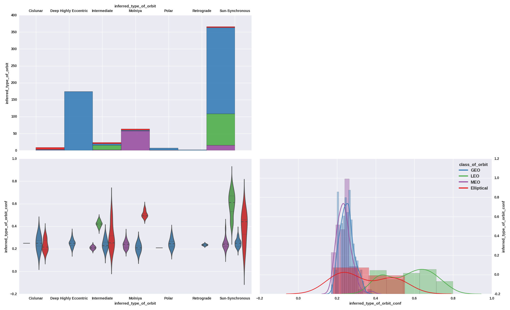
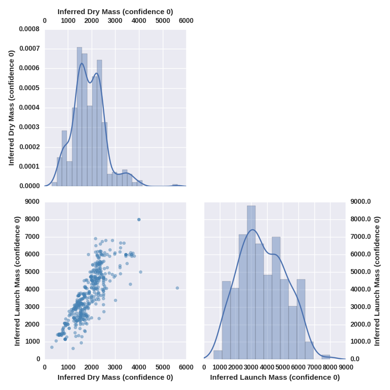
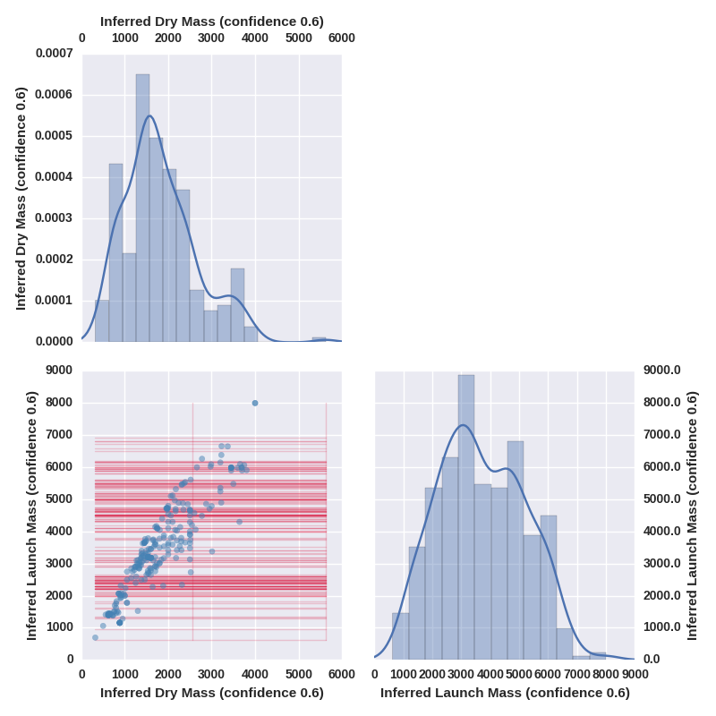
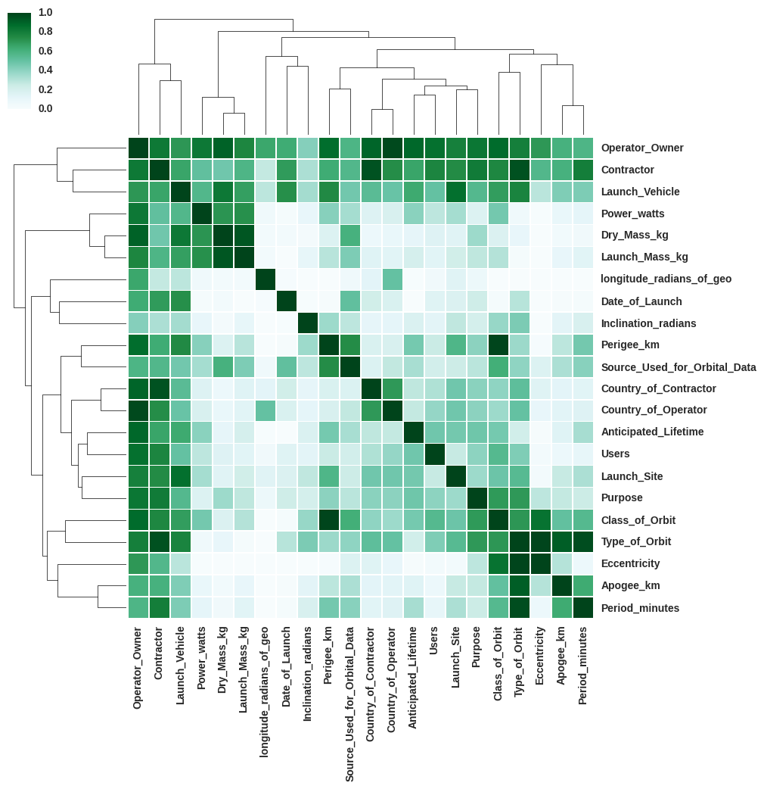
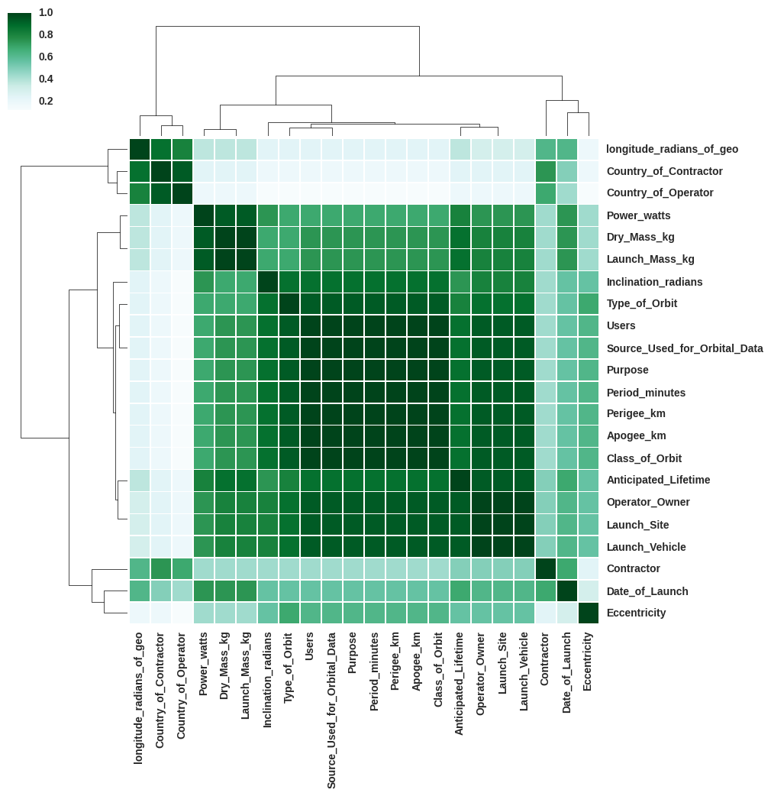
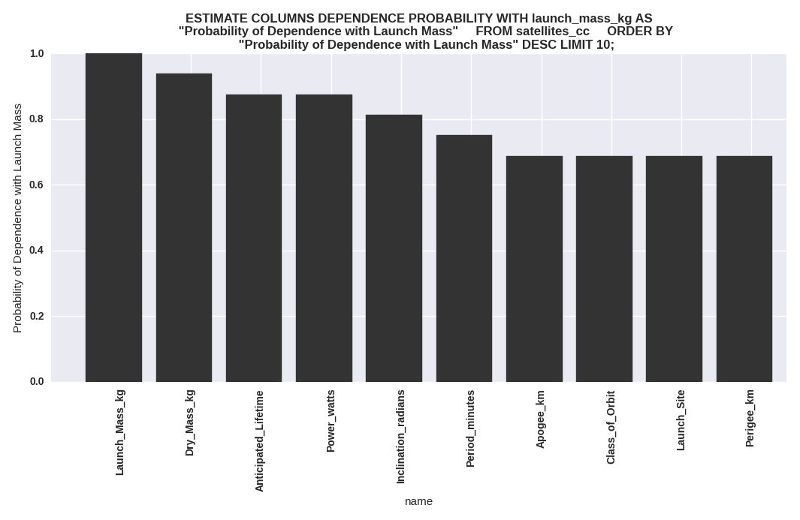
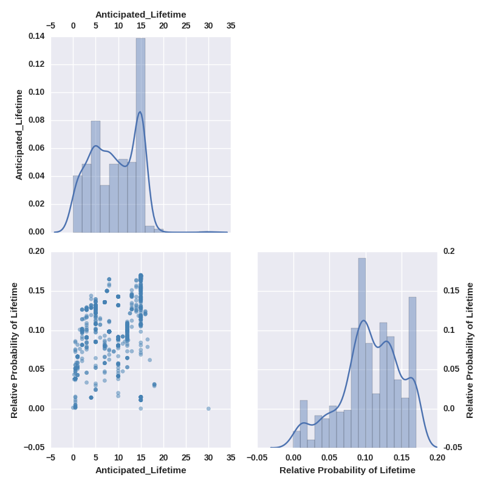

Run with `.read satellites.bql -v`
Exit the shell with ^D (CTRL + D)
In this example we will explore the core functionality of BayesDB by using BayesDB to explore and analyze some real data. The data we will use is the Union of Concerned Scientists' Satellites data. The data is a catalogue of satellites. Each row of the data represents a satellite and each column is a feature of that satellite such as dry mass, orbit type, launch date, perigee, etc.
The first thing to do is to load our data. The data are in csv format with
a header of the column names. To load data in the shell, we use the .csv
command followed by what we want the table to be named --- we will call it
satellites --- followed by the path to the csv.
bayeslite> .csv satellites data/satellites.utf8.csv
Now that we have a table, we can use the .describe command to view the
columns in the table.
bayeslite> .describe table satellites
tabname | colno | name | shortname
-----------+-------+------------------------------+----------
satellites | 0 | Name | None
satellites | 1 | Country_of_Operator | None
satellites | 2 | Operator_Owner | None
satellites | 3 | Users | None
satellites | 4 | Purpose | None
satellites | 5 | Class_of_Orbit | None
satellites | 6 | Type_of_Orbit | None
satellites | 7 | Perigee_km | None
satellites | 8 | Apogee_km | None
satellites | 9 | Eccentricity | None
satellites | 10 | Period_minutes | None
satellites | 11 | Launch_Mass_kg | None
satellites | 12 | Dry_Mass_kg | None
satellites | 13 | Power_watts | None
satellites | 14 | Date_of_Launch | None
satellites | 15 | Anticipated_Lifetime | None
satellites | 16 | Contractor | None
satellites | 17 | Country_of_Contractor | None
satellites | 18 | Launch_Site | None
satellites | 19 | Launch_Vehicle | None
satellites | 20 | Source_Used_for_Orbital_Data | None
satellites | 21 | longitude_radians_of_geo | None
satellites | 22 | Inclination_radians | None
We can select data just as we would in SQL in BQL:
bayeslite> SELECT name, dry_mass_kg, period_minutes, class_of_orbit FROM satellites LIMIT 10;
Name | Dry_Mass_kg | Period_minutes | Class_of_Orbit
--------------------------------------------------------+-------------+----------------+---------------
AAUSat-3 | Nan | 100.42 | LEO
ABS-1 (LMI-1, Lockheed Martin-Intersputnik-1) | 1730 | 1436.08 | GEO
ABS-1A (Koreasat 2, Mugunghwa 2, ABS-1A) | 800 | 1436.13 | GEO
ABS-2i (MBSat, Mobile Broadcasting Satellite, Han Byul) | 1700 | 1436.1 | GEO
ABS-7 (Koreasat 3, Mugungwha 3) | 1800 | 1436.06 | GEO
AcrimSat (Active Cavity Radiometer Irradiance Monitor) | 13 | 98.6 | LEO
Advanced Orion 2 (NROL 6, USA 139) | Nan | 1436.14 | GEO
Advanced Orion 3 (NROL 19, USA 171) | Nan | 1436.1 | GEO
Advanced Orion 4 (NRO L-26, USA 202) | Nan | 1438.8 | GEO
Advanced Orion 5 (NRO L-32, USA 223) | Nan | Nan | GEO
We can also use visualization tools, such as .histogram, to plot emperical
frequencies. In the next example, the first argument dry_mass_kg is a
NUMERICAL variable is plotted in different colors based on the `class_of_orbit`.
bayeslite> .histogram SELECT dry_mass_kg, class_of_orbit FROM satellites; -b 35 --normed
masskg, classoforbit FROM satellites; -b 35 --normed --filename output/fig_0.png" />
Finally, we need to tell BayesDB which values to treat as missing, NULL.
Different datasets use different markers for missing data, this dataset uses
NaN. To convert all instances of NaN to SQL NULL, we use the
.nullify command, followed by the table, followed by the value to convert.
bayeslite> .nullify satellites NaN
bayeslite> SELECT name, dry_mass_kg FROM satellites LIMIT 10;
Name | Dry_Mass_kg
--------------------------------------------------------+------------
AAUSat-3 | None
ABS-1 (LMI-1, Lockheed Martin-Intersputnik-1) | 1730
ABS-1A (Koreasat 2, Mugunghwa 2, ABS-1A) | 800
ABS-2i (MBSat, Mobile Broadcasting Satellite, Han Byul) | 1700
ABS-7 (Koreasat 3, Mugungwha 3) | 1800
AcrimSat (Active Cavity Radiometer Irradiance Monitor) | 13
Advanced Orion 2 (NROL 6, USA 139) | None
Advanced Orion 3 (NROL 19, USA 171) | None
Advanced Orion 4 (NRO L-26, USA 202) | None
Advanced Orion 5 (NRO L-32, USA 223) | None
Notice that NaN entires have been replaced with None, which is the
way Python represents SQL NULL.
Before we can as BayesDB any questions we need to create a generator. A generator specifies the model that we want to impose on the data. Here, we will use the default generator, crosscat.
To create a generator we use the keywords CREATE GENERATOR <name> FROM
<table> USING <metamodel> ( [arguments] ).
bayeslite> CREATE GENERATOR satellites_cc FOR satellites
...> USING crosscat(
...> GUESS(*),
...> name IGNORE
...> );
We created a generator named satellites_cc for our satellites table using
the crosscat metamodel. Inside the parenthesis, we provide crosscat with
a little information about how we would like the columns in our table to be
modeled. GUESS(*) means that we would like crosscat to guess the
statistical data type of each column, e.g., NUMERICAL, CATEGORICAL
CYCLIC; Name IGNORE means that we would like crosscat to ignore the
Name column during analyses and not to assign it a statistical data type.
We can see how well the system guess the types of our columns by using the `.describe command.
bayeslite> .describe columns satellites_cc
colno | name | stattype | shortname
------+------------------------------+-------------+----------
1 | Country_of_Operator | categorical | None
2 | Operator_Owner | categorical | None
3 | Users | categorical | None
4 | Purpose | categorical | None
5 | Class_of_Orbit | categorical | None
6 | Type_of_Orbit | categorical | None
7 | Perigee_km | numerical | None
8 | Apogee_km | numerical | None
9 | Eccentricity | numerical | None
10 | Period_minutes | numerical | None
11 | Launch_Mass_kg | numerical | None
12 | Dry_Mass_kg | numerical | None
13 | Power_watts | numerical | None
14 | Date_of_Launch | numerical | None
15 | Anticipated_Lifetime | numerical | None
16 | Contractor | categorical | None
17 | Country_of_Contractor | categorical | None
18 | Launch_Site | categorical | None
19 | Launch_Vehicle | categorical | None
20 | Source_Used_for_Orbital_Data | categorical | None
21 | longitude_radians_of_geo | numerical | None
22 | Inclination_radians | numerical | None
The next step is to tell BayesDB how many instances of crosscat we would like to use. These instances are referred to as models, and answers from BayesDB are the result of averaging across models. We will arbitratily choose 16 models.
bayeslite> INITIALIZE 16 MODELS FOR satellites_cc;
Now we ask BayesDB to use ANALYZE our data using the instances of
crosscat we have just initialized. We will ANALYZE for four minutes
(though in practice, you will most certainly want to analyze for longer).
We will also ask BayesDB to stop every two ANALYZE steps to take some
diagnostic information that will help us later to decide whether we have
done enough analysis on enough models (but do not worry about this quite
yet).
bayeslite> ANALYZE satellites_cc FOR 4 MINUTES CHECKPOINT 2 ITERATION WAIT;
Inferring is like imputing. INFER produces a summary value for a missing
(NULL) entry. If we use the EXPLICIT keyword, we can re-infer present
values.
We shall impute missing values of dry_mass_kg. First, let us see how many values
are missing.
bayeslite> SELECT COUNT(*) FROM satellites WHERE dry_mass_kg IS NULL;
"COUNT"(*)
----------
677
Nearly half the values of dry mass are missing! We can visualize missing
values in pairs of continuous columns using the .show command with the
-m or --show-missing option.
bayeslite> .show 'SELECT dry_mass_kg, launch_mass_kg FROM satellites;' -m
masskg, launchmasskg FROM satellites;' -m --filename output/fig_1.png" />
Missing values are represented as lines along their missing dimension. This way, we can see which values of the missing dimensions are more likely by observing where the lines intersect with the existing data points.
We will use the INFER command to impute missing values for geosynchronous
satellites.
bayeslite> .show 'INFER dry_mass_kg AS "Inferred Dry Mass (confidence 0)",
...> launch_mass_kg AS "Inferred Launch Mass (confidence 0)"
...> WITH CONFIDENCE 0
...> FROM satellites_cc
...> WHERE class_of_orbit = GEO;' -m
masskg AS "Inferred Dry Mass (confidence 0)", launchmasskg AS "Inferred Launch Mass (confidence 0)" WITH CONFIDENCE 0 FROM satellitescc WHERE classoforbit = GEO;' -m --filename output/fig2.png" />
No more missing values. Notice the WITH CONFIDENCE clause. This tells
BayesDB to impute entries only if it is confident to a certain degree.
WITH CONFIDENCE 0 will then impute all values regardless; if we asked for
confidence of 0.6 fewer entries (or perhaps none at all) would be filled in.
bayeslite> .show 'INFER dry_mass_kg AS "Inferred Dry Mass (confidence 0.6)",
...> launch_mass_kg AS "Inferred Launch Mass (confidence 0.6)"
...> WITH CONFIDENCE 0.6
...> FROM satellites_cc
...> WHERE class_of_orbit = GEO;' -m
masskg AS "Inferred Dry Mass (confidence 0.6)", launchmasskg AS "Inferred Launch Mass (confidence 0.6)" WITH CONFIDENCE 0.6 FROM satellitescc WHERE classoforbit = GEO;' -m --filename output/fig3.png" />
BayesDB's notion of CONFIDENCE is unlike confidence in standard
statistics. Whereas in standard statistics 'confidence' is typically paired
with the word 'interval' to describe some region of probability mass,
CONFIDENCE in BayesDB is a measure of inter-model agreement; that is,
CONFIDENCE is the probability that among the models, there is a unimodal
summary of the value we wish to impute given all other entries in that
entry's row.
Now that the analyses are finished, we can begin to ask BayesDB questions about the implications of the data. Often the first question we want to ask, especially if we are relatively clueless about the data, is which columns are most likely dependent on each other.
One of the most common statistical techniques for detecting dependence
between variables is using correlation coefficients.
BayesDB has the ability to compute observed correlation coefficients
and their associated pvalues between all the pairs of columns, using the
ESTIMATE PAIRWISE command; and because we do not want to look at
at a very long table, we will visualize it in a heatmap using the .heatmap
command. We can visualize using the .heatmap.
bayeslite> .heatmap 'ESTIMATE PAIRWISE CORRELATION AS corr FROM satellites_cc;'
cc;' --filename output/fig4.png" />
BayesDB has a more powerful notion of dependence called DEPENDENCE PROBABILITY,
which is the degree of belief that two columns have some dependence. Notice
that DEPENDENCE PROBABILITY determines a richer network of relationships
than standard measures of correlation.
bayeslite> .heatmap 'ESTIMATE PAIRWISE DEPENDENCE PROBABILITY FROM satellites_cc;'
Each cell in the heatmap represents the dependence probability between a
pair of columns. Darker cells represent higher dependence probability. The
dendrogram is primarily for visualization, but clusters columns roughly into
dependent groups. Note which groups of columns have the highest dependence
probability. Do you notice any patterns? Many of the variables in this table
are nearly deterministic, given the laws of physics. For example, we can
determine a satellite's orbital period (the amount of time an orbit takes)
form its perigee (lowest altitude of the orbit) and apogee (highest altitude
of the orbit).
Which variables predict Anticipated_Lifetime --- which are the main predictors?
bayeslite> ESTIMATE COLUMNS DEPENDENCE PROBABILITY WITH anticipated_lifetime AS
...> "Probability of Dependence with Lifetime"
...> FROM satellites_cc
...> ORDER BY "Probability of Dependence with Lifetime" DESC LIMIT 10;
name | Probability of Dependence with Lifetime
---------------------+----------------------------------------
Anticipated_Lifetime | 1
Inclination_radians | 0.9375
Launch_Mass_kg | 0.875
Power_watts | 0.875
Dry_Mass_kg | 0.8125
Launch_Site | 0.8125
Launch_Vehicle | 0.75
Users | 0.75
Class_of_Orbit | 0.6875
Operator_Owner | 0.6875
bayeslite> ESTIMATE COLUMNS DEPENDENCE PROBABILITY WITH anticipated_lifetime AS
...> "Probability of Dependence with Lifetime"
...> FROM satellites_cc
...> ORDER BY "Probability of Dependence with Lifetime" DESC LIMIT 10;
name | Probability of Dependence with Lifetime
---------------------+----------------------------------------
Anticipated_Lifetime | 1
Inclination_radians | 0.9375
Launch_Mass_kg | 0.875
Power_watts | 0.875
Dry_Mass_kg | 0.8125
Launch_Site | 0.8125
Launch_Vehicle | 0.75
Users | 0.75
Class_of_Orbit | 0.6875
Operator_Owner | 0.6875
bayeslite> .show 'SELECT anticipated_lifetime, period_minutes, launch_mass_kg,
...> dry_mass_kg, inclination_radians FROM satellites;'
lifetime, periodminutes, launchmasskg, drymasskg, inclinationradians FROM satellites;' --filename output/fig6.png" />
Let us look at the dependencies for other variables such as purpose,
and launch_mass_kg. We can show the data both in tabular and graphical form.
bayeslite> ESTIMATE COLUMNS DEPENDENCE PROBABILITY WITH purpose AS
...> "Probability of Dependence with Purpose"
...> FROM satellites_cc
...> ORDER BY "Probability of Dependence with Purpose" DESC LIMIT 10;
name | Probability of Dependence with Purpose
-----------------------------+---------------------------------------
Purpose | 1
Launch_Vehicle | 0.9375
Users | 0.9375
Class_of_Orbit | 0.875
Launch_Site | 0.875
Operator_Owner | 0.875
Perigee_km | 0.875
Period_minutes | 0.875
Source_Used_for_Orbital_Data | 0.875
Apogee_km | 0.8125
bayeslite> .bar 'ESTIMATE COLUMNS DEPENDENCE PROBABILITY WITH launch_mass_kg AS
...> "Probability of Dependence with Launch Mass"
...> FROM satellites_cc
...> ORDER BY "Probability of Dependence with Launch Mass" DESC LIMIT 10;'
masskg AS "Probability of Dependence with Launch Mass" FROM satellitescc ORDER BY "Probability of Dependence with Launch Mass" DESC LIMIT 10;' --filename output/fig7.png" />
We can use BayesDB to identify anomalous values in our table. An anomaly
is different from an outlier. An anomalous value is an observed value that
has a low probability under the inferred model; and outlier is defined
simply as having an extreme value. We can visualize this idea by creating
a scatter plot of data and their predictive probability functions
(PREDICTIVE PROBABILITY). We use the ESTIMATE keyword rather than
SELECT because we are asking questions of the generator. We also
specify that we only want the probabilities of non-null values using a
WHERE clause (the predictive probability of NULL is NULL).
bayeslite> .show 'ESTIMATE anticipated_lifetime, PREDICTIVE PROBABILITY OF anticipated_lifetime
...> AS "Relative Probability of Lifetime"
...> FROM satellites_cc
...> WHERE anticipated_lifetime IS NOT NULL;'
lifetime, PREDICTIVE PROBABILITY OF anticipatedlifetime AS "Relative Probability of Lifetime" FROM satellitescc WHERE anticipatedlifetime IS NOT NULL;' --filename output/fig_8.png" />
Note that there are plenty of non-extreme values that have low probabilities.
Let us get a list of the 10 most anomalous satellites by sorting by
relative probability of lifetime in ascending (ASC) order.
bayeslite> CREATE TEMP TABLE unlikely_lifetimes AS ESTIMATE name, anticipated_lifetime,
...> PREDICTIVE PROBABILITY OF anticipated_lifetime
...> AS "Relative Probability of Lifetime"
...> FROM satellites_cc;
bayeslite> SELECT * FROM unlikely_lifetimes
...> WHERE Anticipated_Lifetime IS NOT NULL
...> ORDER BY "Relative Probability of Lifetime" ASC LIMIT 10;
Name | Anticipated_Lifetime | Relative Probability of Lifetime
------------------------------------------------------------------------------+----------------------+---------------------------------
International Space Station (ISS [first element Zarya]) | 30 | 7.51353982709e-07
Landsat 7 | 15 | 0.000171660566109
Intelsat 701 | 0.5 | 0.00110533567674
Milstar DFS-5 (USA 164, Milstar 2-F3) (Military Strategic and Tactical Relay) | 0 | 0.00125200959929
Sicral 1A | 0.5 | 0.00150493811402
Express-A1R (Express 4A, Ekspress-A No. 4) | 0.5 | 0.00165065104071
Sicral 1B | 0.5 | 0.00236815225572
SDS III-3 (Satellite Data System) (NRO L-12, Aquila-1, USA 162) | 0.5 | 0.00314255032604
Optus B3 | 0.5 | 0.00359723240625
MUOS-1 (Mobile User Objective System 1) | 0.5 | 0.0049487694417
Recall earlier that we mentioned that some of the relations are governed by the laws of physics and are thus nearly deterministic? We can use this determinism coupled with our notion of anomalousness to search the table for data-entry errors. A geosynchronous orbit should take 24 hours (1440 minutes). Let us display the anomalous values for satellites in geosynchronous orbit.
bayeslite> CREATE TEMP TABLE unlikely_periods AS ESTIMATE name, class_of_orbit, period_minutes,
...> PREDICTIVE PROBABILITY OF period_minutes AS "Relative Probability of Period"
...> FROM satellites_cc;
bayeslite> SELECT * FROM unlikely_periods
...> WHERE class_of_orbit IS GEO AND period_minutes IS NOT NULL
...> ORDER BY "Relative Probability of Period" ASC LIMIT 10;
Name | Class_of_Orbit | Period_minutes | Relative Probability of Period
----------------------------------------------------------------+----------------+----------------+-------------------------------
AEHF-3 (Advanced Extremely High Frequency satellite-3, USA 246) | GEO | 1306.29 | 0.0013803768558
AEHF-2 (Advanced Extremely High Frequency satellite-2, USA 235) | GEO | 1306.29 | 0.00138250960867
DSP 20 (USA 149) (Defense Support Program) | GEO | 142.08 | 0.00260573250161
Intelsat 903 | GEO | 1436.16 | 0.0030466671703
BSAT-3B | GEO | 1365.61 | 0.0031700534801
Intelsat 902 | GEO | 1436.1 | 0.00327082624867
SDS III-6 (Satellite Data System) NRO L-27, Gryphon, USA 227) | GEO | 14.36 | 0.00349186578493
Advanced Orion 6 (NRO L-15, USA 237) | GEO | 23.94 | 0.00360477074483
SDS III-7 (Satellite Data System) NRO L-38, Drake, USA 236) | GEO | 23.94 | 0.00360477074483
QZS-1 (Quazi-Zenith Satellite System, Michibiki) | GEO | 1436 | 0.00381912730397
We see a couple of oddities. There are satellites with 24-minute periods. It appears that these entries are in hours rather than minutes. There are other entries that have too-short periods, which appear to be decimal errors.
NOTE: We have reported these errors to the database maintainers.
Suppose that we saw a satellite in geosynchrous orbit with a mass of
500kg; who launched it, and what is its purpose? We can ask BayesDB to simulate
this scenario for us. We will do this in two queries. In the first query, we
will create a temporary table (TEMP TABLE) consisting of simulated data using
the SIMULATE keyword (see Notes for more info about temporary tables); in the
second query, we will concatenate and organize the data for easy reading.
We SIMULATE the Country and Purpose variables, GIVEN that we have
observed the Class_of_Orbit and Dry_Mass (1000 simulations).
We specify the number of points to simulate using LIMIT.
bayeslite> CREATE TEMP TABLE satellite_purpose AS
...> SIMULATE country_of_operator, purpose FROM satellites_cc
...> GIVEN Class_of_orbit = GEO, Dry_mass_kg = 500
...> LIMIT 1000;
Note that everything after the AS is a perfectly valid query. CREATE
TEMP TABLE satellite_purpose AS saves the result of the query that follows it
into a table called satellite_purpose which we can refer to later. Temporary
tables are destroyed when the session is closed.
To determine which country-purpose combination is most probable
we will concatenate the values of the first two columns into a single
country-purpose column using the || operator, and then use SQLite's
COUNT function to calculate the frequencies. Let us look at the top 10
most frequent user-purpose combinations.
bayeslite> SELECT country_of_operator || "--" || purpose AS "Country-Purpose",
...> COUNT("Country-Purpose") AS frequency
...> FROM satellite_purpose
...> Group BY "Country-Purpose"
...> ORDER BY frequency DESC
...> LIMIT 10;
Country-Purpose | frequency
------------------------------------------+----------
USA--Communications | 145
USA--Navigation/Global Positioning | 64
Russia--Communications | 36
China (PR)--Communications | 27
USA--Technology Development | 17
China (PR)--Navigation/Global Positioning | 16
Russia--Navigation/Global Positioning | 16
India--Communications | 12
Multinational--Communications | 12
USA--Electronic Surveillance | 10
We can visualize this data using the .bar command
bayeslite> .bar 'SELECT country_of_operator || "--" || purpose AS "Country-Purpose",
...> COUNT("Country-Purpose") AS frequency
...> FROM satellite_purpose
...> GROUP BY "Country-Purpose"
...> ORDER BY frequency DESC
...> LIMIT 20;'